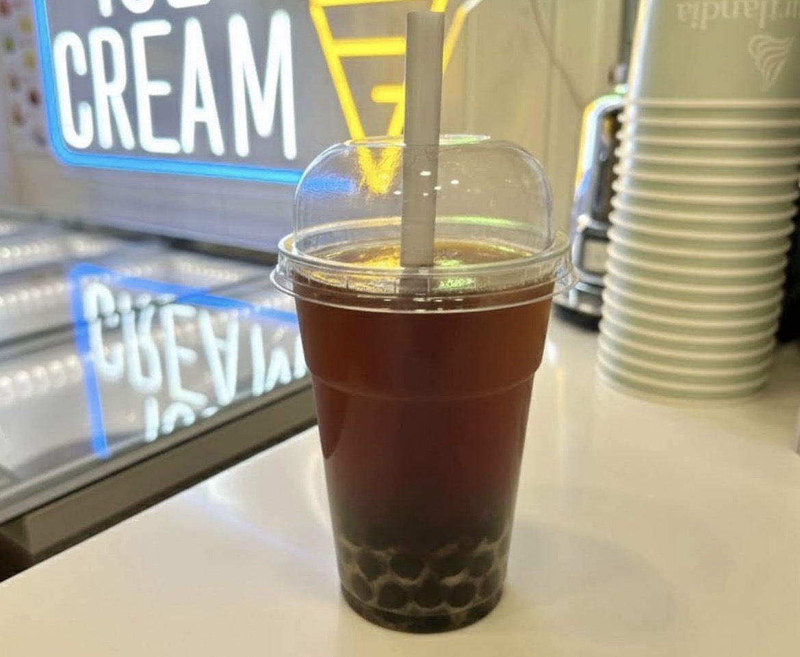
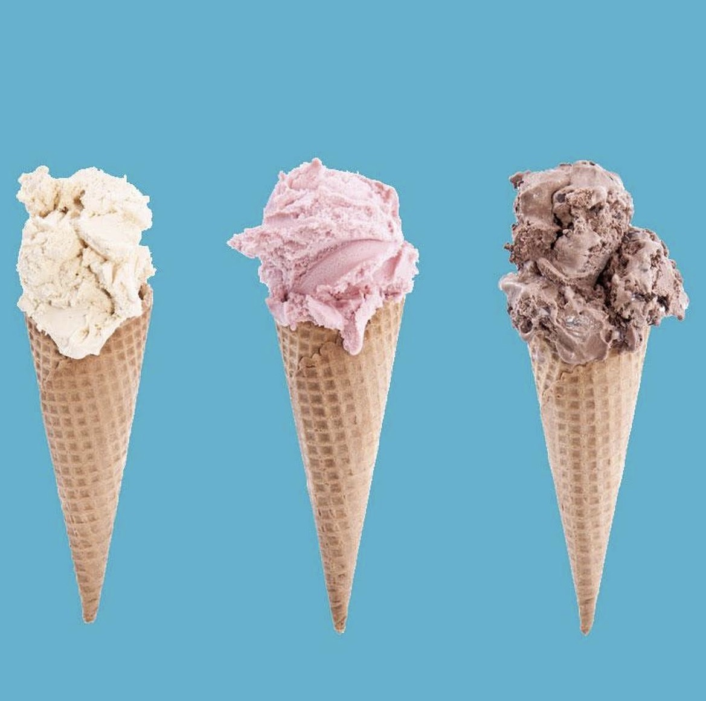
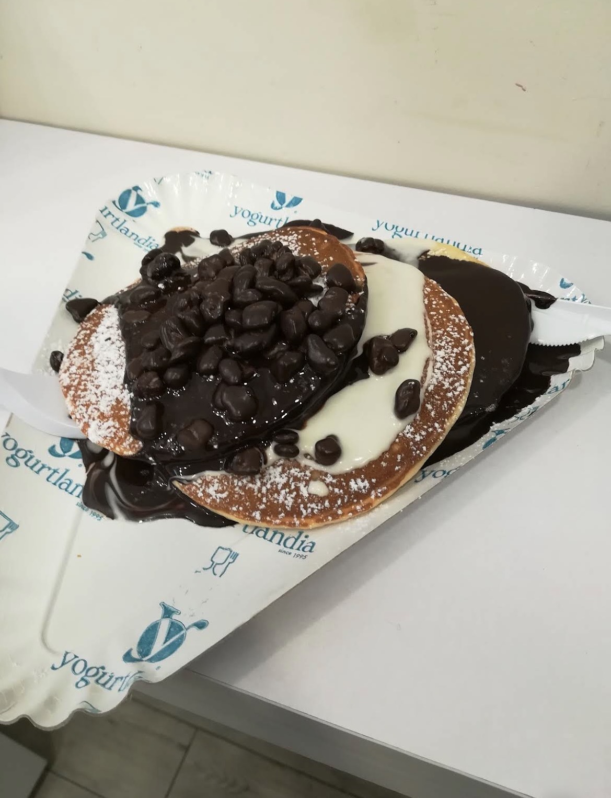

Yogurtlandia Cattedrale
Via Vittorio Emanuele, 431/A
90134 Palermo (PA)
Lunedì – Domenica · 10:00 – 02:00
Yogurteria & Creperia · Palermo
Frozen yogurt, crêpes e tante specialità: scopri il menu e vieni a trovarci nel cuore di Palermo.
Via Vittorio Emanuele 431/A · aperti tutti i giorni fino a tarda notte

Le nostre specialità
Yogurt, crêpes, waffle e bevande: guarda le foto dei nostri prodotti.






Dove siamo
Via Vittorio Emanuele, 431/A
90134 Palermo (PA)
Lunedì – Domenica · 10:00 – 02:00
WhatsApp: +39 392 344 1800
Telefono: +39 091 206024